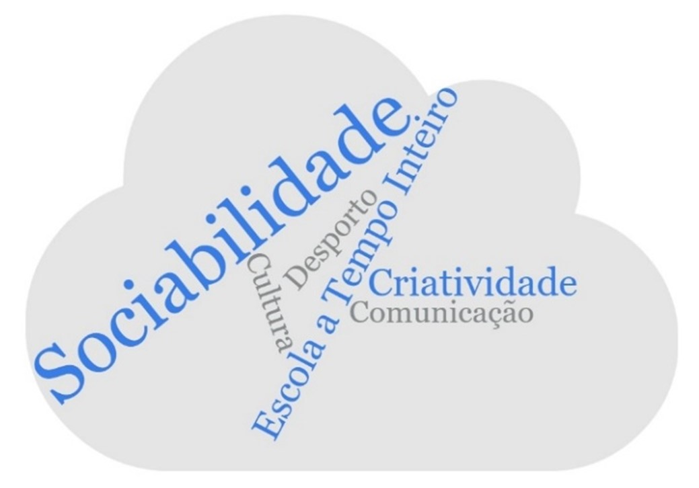
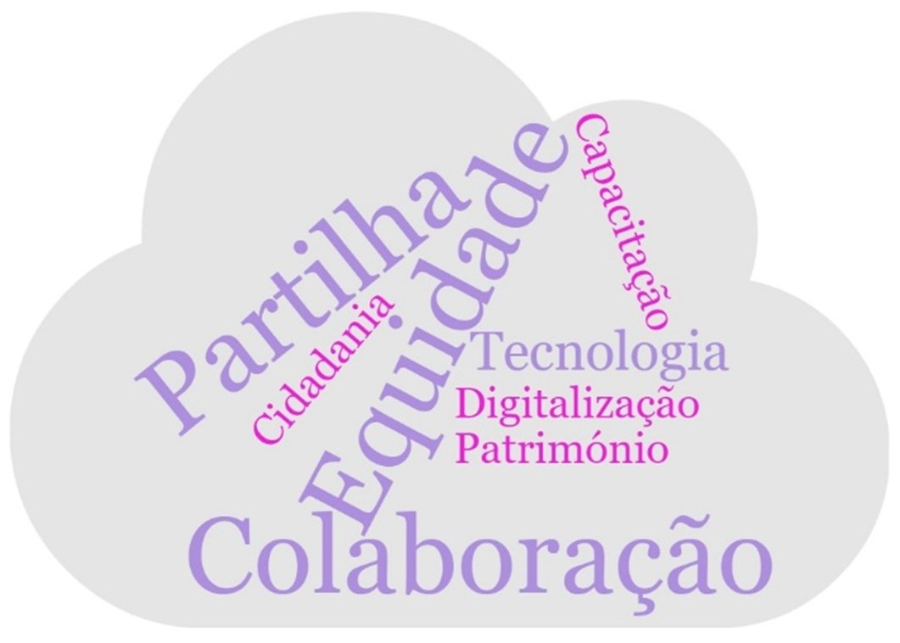

Capítulo 4 O PIICIE de Santa Maria da Feira
4.1 Breve caracterização territorial e educativa do município
Ainda que Santa Maria da Feira tenha emergido como a unidade territorial em análise, o trabalho desenvolvido não se esgota na sua realidade, que deve ser entendida apenas como o ponto de partida. Não obstante, importa encetar uma breve caracterização, que permita conhecer o território em que se desenvolve o PIICIE em estudo.
O Município de Santa Maria da Feira é um território dinâmico e palco de diversidades que se traduzem na natureza plural dos seus territórios educativos. À semelhança de outros concelhos do país e das regiões onde se insere (AMP e Região Norte), enfrenta desafios i) que emergem de singularidades e assimetrias internas, i) que decorrem do panorama de evolução que se perspetiva para o médio e longo prazo e iii) que se enquadram em reptos mais abrangentes ligados a orientações nacionais e transnacionais. Assim, a compreensão das opções estratégicas na promoção do sucesso escolar em Santa Maria da Feira não poderá ser dissociada das características socioeducativas e dos referenciais de partida recentes na quantificação e interpretação dos níveis de desempenho que apresenta.
Com uma elevada dinâmica empresarial, associativa e cultural, bem como um forte histórico industrial, mais presente em algumas freguesias, o concelho de Santa Maria da Feira assinalou na última década uma evolução considerável dos níveis de qualificação da sua população residente (INE, 2021). As taxas de retenção, um dos principais indicadores abordados no estudo, pelo contrário, mostram uma diminuição e valores de referência abaixo dos da região e do país (confirmar) (DGEEC, 2022b). Ainda que estas sejam tendências transversais a vários territórios do país, importa sublinhar que a Educação tem sido assumida como área prioritária de intervenção no município de estudo, à qual tem sido dada crescente visibilidade. A candidatura realizada para elaboração do PIICIE municipal é disso exemplo, assim como o Projeto Educativo Municipal 2014’20 e mais recentemente o Plano Estratégico Educativo Municipal 2022-30, instrumentos que têm contribuído para a definição e afirmação das políticas educativas locais em articulação com outras áreas como a cultura, o desporto ou a economia.
A necessidade de acompanhar as respetivas dinâmicas e políticas educativas municipais tem conduzido, igualmente, a um investimento em medidas de monitorização, visando um olhar integrado sobre a implementação, o acompanhamento e a avaliação de projetos e iniciativas em matéria de educação, promovidas pelo município, mas também por outros agentes territoriais. Muitas destas iniciativas terão como objetivo específico promover o sucesso escolar, enquanto noutras o propósito será mais alargado e direcionado a outros domínios da área educativa, mas nem por isso menos relevantes na elevação e consolidação dos padrões de qualidade do sistema de ensino à escala local.
A riqueza e multiplicidades que povoam o concelho justificam a diversidade encontrada ao nível da rede educativa, da qual fazem parte, atualmente, 124 instituições desde a educação pré-escolar ao ensino superior (Marques et al., n.d.). A oferta pública conta com 85 estabelecimentos escolares distribuídos por 9 Agrupamentos de Escolas (AE). A escola de proximidade, isto é, aquela que corresponde aos primeiros níveis de educação e ensino (educação pré-escolar e 1º ciclo do ensino básico), é garantida nas 21 freguesias. E, naturalmente, que territórios centrais do concelho que têm registado, inclusive, um crescimento populacional coincidem com as áreas de influência dos agrupamentos de escolas com mais alunos inscritos, AE de Santa Maria da Feira e AE de Fernando Pessoa. Simultaneamente, várias instituições integram e contribuem para a qualificação da rede de ofertas educativas e formativas do concelho, como as instituições da rede solidária com educação pré-escolar, os centros de formação profissional públicos, as instituições privadas independentes do estado, as instituições de ensino artístico especializado, as instituições que salvaguardam a valência de creche e a instituição com oferta de ensino superior.

4.2 Apresentação e descrição do PIICIE
O PIICIE de Santa Maria da Feira denomina-se ‘EDUFEIR@ - Inovamos para o Sucesso’ e integra seis ações que iniciaram a 12 de outubro de 2018 e terminaram a 31 de dezembro 2021. Como a Tabela X ilustra, as diferentes ações responderam a distintos desafios, decorrendo em períodos nem sempre coincidentes.
A Ação 1 - Equipa Multidisciplinar centra-se, essencialmente, na prevenção e na intervenção em casos de alunos que demonstram dificuldades em aprender e com risco de abandono escolar. A Ação 2 - Vive as Férias promove a aquisição de diversas competências ao nível individual e social, através de atividades lúdicas e criativas. A Ação 3 - Observatório de Monitorização e Apoio ao Sucesso Escolar foi criada com o objetivo de todos os munícipes conseguirem acompanhar de forma fácil e rigorosa as políticas educativas implementadas em Santa Maria da Feira. Já a Ação 4 - Educação 5.0 foca-se no desenvolvimento de valores importantes para que as crianças, professores e pais tenham capacidades de exercerem um papel ativo na comunidade. Para além disso, esta ação pressupõe a criação de um ambiente tecnológico de modo a favorecer a partilha de informação e o trabalho colaborativo. A Ação 5 - Hora de Programar tem como princípios a inovação e a criatividade e é através destes princípios que pretende consolidar aprendizagens na área das ciências, matemática e leitura. Na Ação 6 - Hora de Experimentar são abordados fenómenos da natureza com o auxílio da ciência. Assim, os alunos têm oportunidade fazer experiências e, simultaneamente, aprender sobre ações do quotidiano.
Analisando a natureza e o espírito das ações de uma perspetiva global, destacam-se princípios como a cooperação e a colaboração, remetendo para o principal objetivo da criação do PIICIE, isto é, o foco no trabalho em rede para o desenvolvimento do município e para a capacitação da comunidade.
No total, participaram cerca de 18657 alunos nas ações do PIICIE (Figura 6).8 A ação Educação 5.0 destaca-se com o maior número de participantes pelo facto de integrar tanto os participantes das Olimpíadas da Cidadania e do Património, nos anos de 2019/20 e 2020/21, como também todos os alunos envolvidos na atribuição de tablets às escolas no início de 2018. N.º total de alunos não coincide com dados relatório Cláudia. Verificar. Três das principais mais-valias do PIICIE de Santa Maria da Feira passam pela diversidade temática dos domínios das ações, pela promoção da articulação interinstitucional e pela iniciativa municipal em dar continuidade temporal e estender o PIICIE a outros públicos para lá do cofinanciamento, assumindo a despesa. Aparenta, ainda, haver uma razoável visibilidade deste plano e entendimento em torno do seu valor.
4.2.1 Diversidade temática
O desenho e implementação deste PIICIE assente em várias áreas temáticas traduz diferentes mensagens relevantes e que podem inspirar outros programas:
- 1) Entende-se que o combate ao insucesso escolar se faz por meio de diferentes tipologias de ação e que apenas uma abordagem simultaneamente multifacetada e integrada poderá ser bem-sucedida;
- 2) Ainda que alinhada com o discurso educativo da UE voltado para a sociedade baseada no conhecimento e para a competitividade (Nóvoa, 2013), a estratégia feirense aparenta ultrapassar esta visão estritamente económica e limitada da Educação. Confere, assim, atenção a matérias de inclusão, coesão e de trabalho junto da e para a comunidade.
- 3) A aposta estratégica em áreas STEM como centrais no sucesso escolar e pessoal dos indivíduos (ilustrada através das ações Hora de Experimentar e Hora de Programar).
Ainda que haja uma ligação entre o PIICIE e a estratégia local para a Educação, ficam de fora da espinha dorsal do projeto algumas áreas estratégicas de Santa Maria da Feira, como as Artes ou o Desporto, ainda que se entenda que estas são centrais para o sucesso escolar (REF PEEM). No entanto, esta opção limita as redundâncias e permite à política cofinanciada cumprir o seu valor acrescentado (Mairate, 2007).
4.2.2 Articulação interinstitucional
As ações refletem o espírito de inclusão e articulação com diversos agentes que são essenciais para a concretização das metas definidas. Foram várias as entidades parceiras que apoiaram a realização das ações, destacando-se a ação 1 - Equipa Multidisciplinar que requereu um maior número de parcerias (cerca de 18) uma vez que as sessões do projeto Desafia-TE foram realizadas com diversos agentes de diferentes áreas (Figura 5). Estes agentes atuam no território e com a comunidade, assim conhecendo as suas especificidades e podendo encetar uma ação direcionada.
4.2.3 Continuidade extra-cofinanciamento
Apesar de ter sido definido que todas as ações do PIICIE de Santa Maria da Feira terminariam a 31 de dezembro de 2021, como já mencionado anteriormente, algumas ações, pelo seu grande impacto e sucesso, tiveram continuidade para o ano letivo seguinte (Ação 1 – Equipa Multidisciplinar). Outras foram alargadas a escolas e/ou públicos não contemplados inicialmente, pelo que os custos financeiros desta extensão das atividades e projetos ficaram a custo do Município. É disto exemplo a Ação 6 – Hora de Experimentar, alargada a outras escolas, ou a Ação 4 – Educação 5.0, uma vez que o uso da plataforma digital foi alargado à Educação Pré-Escolar.
4.2.4 Visibilidade e apreciação espontânea
Assim, com o término do plano ‘EDUFEIR@ - Inovamos para o Sucesso’, foi possível aferir a satisfação das entidades envolvidas em todas ações, bem como obter alguns contributos retirados de um inquérito realizado aos agentes educativos no âmbito do PEEM 2022-2030. No inquérito direcionado para os agentes educativos, foram mencionados o projeto Desafia-te, os programas Vives e a plataforma Edufeira como iniciativas que contribuíram para melhorar a educação no município e no futuro. Deste modo, sendo estes os projetos mais referidos, é percetível o impacto positivo e diferenciador dos mesmos na comunidade educativa.
4.2.5 Ação 1 - Equipa Multidisciplinar
Foram desenvolvidos dois projetos: Sessões de acompanhamento de alunos com medidas adicionais na EB Corga de Lobão e o Desafia-te. O primeiro projeto consiste em sessões quinzenais de orientação e suporte destes alunos, envolvendo atividades realizadas tanto em contexto escolar como no exterior. Tendo por base esta definição, realizaram-se atividades na área do desporto, da saúde e da cultura, como por exemplo a construção de um peddy-paper em colaboração com os professores e as visitas ao Zoo de Lourosa e ao Castelo de Santa Maria da Feira. O Projeto Desafia-te conta com a colaboração dos agrupamentos de escolas do município e com diversos parceiros locais para a realização de sessões em locais diferentes todas as semanas. O processo de seleção para o Desafia-te inclui sessões de divulgação em cada sede de agrupamento, seguidas de inscrições e entrevistas individuais, sendo que todos os anos o grupo de aluno selecionados é alterado. Assim, este projeto pretende proporcionar experiências diferentes de cariz desportivo, cultural, cívico, entre outras, aos selecionados de forma a transmitir uma visão comunitária e inclusiva.
4.2.6 Ação 2 – Vive as Férias

Os programas VIVES ocorrem nos três períodos de férias letivas (na Páscoa, Verão e Natal) e têm duração de uma semana para cada grupo de alunos inscritos. Durante esta semana são realizadas atividades, principalmente nas áreas desportiva e cultural, que promovem a criatividade e a inovação, bem como o foco no desenvolvimento de competências individuais e de convivência. As planificações das atividades têm em consideração as idades e as particularidades de cada grupo de alunos.
4.2.7 Ação 3 – Observatório de monitorização e apoio ao sucesso escolar

O Observatório de Monitorização e Apoio ao Sucesso Escolar tinha como pretensões o acompanhamento das políticas educativas implementadas, a monitorização dos indicadores de níveis de sucesso e a sua correlação com os dados socioeconómicos da população. A construção e atualização permanente desta ferramenta serviriam tanto os decisores políticos no âmbito do planeamento municipal da educação, como a comunidade educativa e qualquer cidadão que aceda aos painéis públicos da plataforma. Uma adicional mais-valia do Observatório residiria na integração na integração do sistema de informação de apoio ao sistema educativo, assim cruzando indicadores. Em última análise, este projeto permitiria o reforço da tomada de decisão com base em evidências, assim como uma maior transparência e accountability.
4.2.8 Ação 4 – Educação 5.0

Esta ação desenvolveu três projetos: a plataforma digital, aquisição de tablets e ações de capacitação. A plataforma Edufeira destina-se aos alunos do 1º CEB, professores e encarregados de educação e surge como um elemento facilitador de aprendizagem e de partilha de conhecimento, de forma a promover o trabalho colaborativo. Os conteúdos partilhados abrangem temáticas acerca do património de Santa Maria da Feira, da cidadania, apoio ao estudo e atividades/desafios para fazer em família. Além destes conteúdos, nos anos letivos 2019/20 e 2020/21, realizou-se o concurso “Olimpíadas do Património” para alunos de 3º e 4º ano, onde cada aluno teve a oportunidade de participar individualmente, sendo apurada a melhor turma. Da 1ª fase resultaram nove turmas vencedoras, uma por cada agrupamento de escolas. Na fase final, as turmas apuradas competiram entre si e escolheu-se a vencedora consoante a pontuação adquirida.
Associado a este projeto, o município adquiriu cerca de 1200 tablets para equipar as 55 escolas de 1º ciclo, de modo a contribuir para a utilização da plataforma em contexto de sala de aula. As ações de capacitação têm como objetivo divulgar e informar os participantes acerca de práticas educativas promotoras de mudança. Alguns exemplos de ações de capacitação desenvolvidas no âmbito da ação Educação 5.0 são a Oficina de Oficina de Formação Professores e as Jornadas da Educação.
4.2.9 Ação 5 – Hora de Programar

No âmbito da ação Hora de Programar foram realizadas sessões quinzenais junto dos alunos de 1º, 2º e 3º CEB com o objetivo de desenvolver competências na área da tecnologia e da programação com o apoio dos professores. A realização de trabalhos escolares nestas sessões promoveu o trabalho em grupo e incentivou o relacionamento entre os alunos. Para além das sessões em contexto de escolar, alguns dos alunos participaram no evento Robô Oeste e no Concurso nacional de programação “A Criar com Scratch!”.
4.2.10 Ação 6 – Hora de Experimentar

A ação Hora de Experimentar foi realizada em quatro agrupamentos do município: Argoncilhe, Arrifana, Santa Maria da Feira e Coelho e Castro. Estes agrupamentos apostaram nas ciências experimentais e desenvolveram sessões quinzenais, onde os alunos têm espaço para fazer experiência científicas e explorar novos desafios. Esta ação promove o raciocínio e a cooperação entre os alunos, fazendo com que estes adquiram novas competências na área da ciência.
4.3 Indicadores de resultado e realização da operação cofinanciada
Partilha-se do entendimento avançado pelo relatório de Avaliação do Contributo do PT2020 para a Promoção do Sucesso Educativo, Redução do Abandono Escolar Precoce e Empregabilidade dos jovens, uma vez que não é possível
“estabelecer uma relação direta entre os projetos PIICIE e a evolução das taxas de retenção/desistência (pois o território é beneficiário de um conjunto muito mais lato de medidas que podem fazer a diferença)” (IESE et al., 2021, p. 81)
Este caveat não deve, no entanto, impedir uma análise dos indicadores, designadamente das taxas de retenção e desistência e das taxas de níveis negativos no território em estudo, indicadores contratualizados pela entidade beneficiária. Por outro lado, a leitura dos resultados deve, ainda, estar consciente da conjuntura crítica pandémica, contemporânea de parte do período de análise.
Alunos envolvidos nas atividades, por nível de ensino Meta contratualizada Resultados 4 200 19 891 COMPLEMENTAR COM GRÁFICO OU DASH, POR NÍVEL DE ENSINO
Medidas de cada operação implementadas Meta contratualizada Resultados >80% Entende-se que a meta foi cumprida
O relatório final do PIICIE Edufeira refere que “Todas as ações foram executadas, até em período de suspensão das atividades letivas e não letivas presencias, decorrentes da pandemia COVID-19, com exceção de algumas das atividades da ação 2 – Vive as Férias”.
CONFIRMAR SE CANDIDATURA APRESENTAVA N.º DE MEDIDAS E CONFRONTAR COM O EXECUTADO
Municípios envolvidos na operação Meta contratualizada Resultados 1 1
Agrupamentos abrangidos Meta contratualizada Resultados 100% 100% (9/9 AE abrangidos)
Redução da taxa de alunos com níveis negativos
Meta contratualizada Resultados
>10% 2.º CEB: -53% CONFIRMAR
3.º CEB: -46% CONFIRMAR
COMPLEMENTAR COM GRÁFICO OU DASH
Redução da taxa de retenção e desistência Meta contratualizada Resultados >25% 1.º CEB: -44% CONFIRMAR 2.º CEB: -64% CONFIRMAR 3.º CEB: -74% CONFIRMAR Ensino Secundário: -42% CONFIRMAR COMPLEMENTAR COM GRÁFICO OU DASH
Grau de satisfação
Recorrendo a questionários difundidos nos anos letivos 2019/20 e 2020/21, bem como a pareceres solicitados aos AE aquando do término do projeto, a entidade beneficiária concluiu que a meta contratualizada de 90% foi atingida (REF RELAT SMF). De uma forma geral, os agrupamentos de escolas salientam a importância que o PIICIE teve nos processos de aprendizagem e colaboração para o combate ao insucesso escolar. Destaca-se a necessidade de dar continuidade a vários projetos desenvolvidos e o alargamento destes para todos os alunos, uma vez que produziram experiências inovadoras e úteis no percurso escolar destes, considerando-os um benefício para o município de Santa Maria da Feira. Para além dos agrupamentos, a Fapfeira evidenciou que, apesar dos constrangimentos causados pela pandemia COVID-19, a implementação dos projetos ocorreu de forma positiva, cumprindo as metas propostas. Foi aconselhado, por parte da associação, investir numa maior divulgação das atividades desenvolvidas de forma a informar o maior número de pessoas e aumentar a adesão aos projetos.
4.4 Indicadores específicos de caracterização das ações
Importa complexificar os indicadores de realização das ações, pelo que os indicadores específicos pretendem cumprir este papel. Assim, alguns dos indicadores são comuns a todas as ações , como é caso dos parceiros envolvidos na formulação e/ou na elaboração e o número total de participantes que
Excetuam-se os participantes que poderiam estar associados à Ação 3, cuja contabilização não foi reunida.↩︎